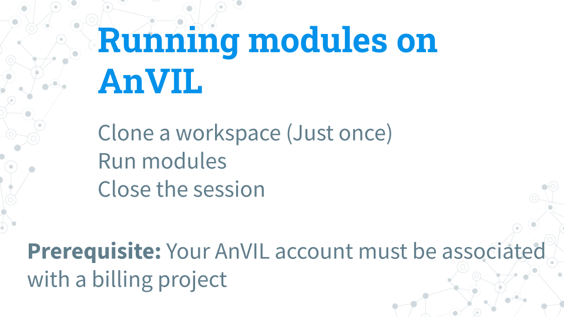
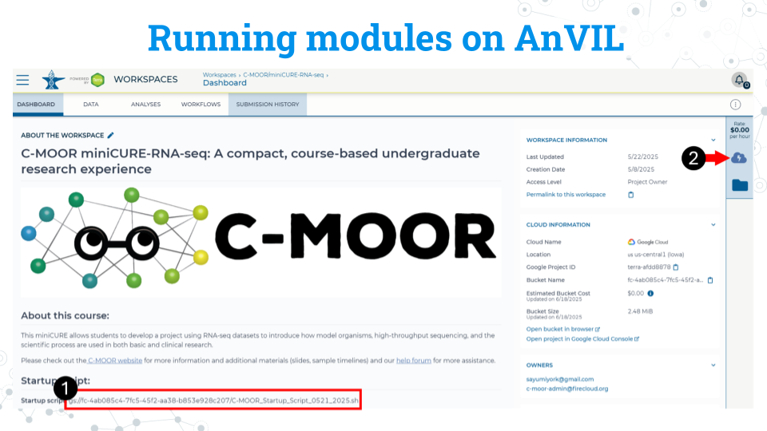
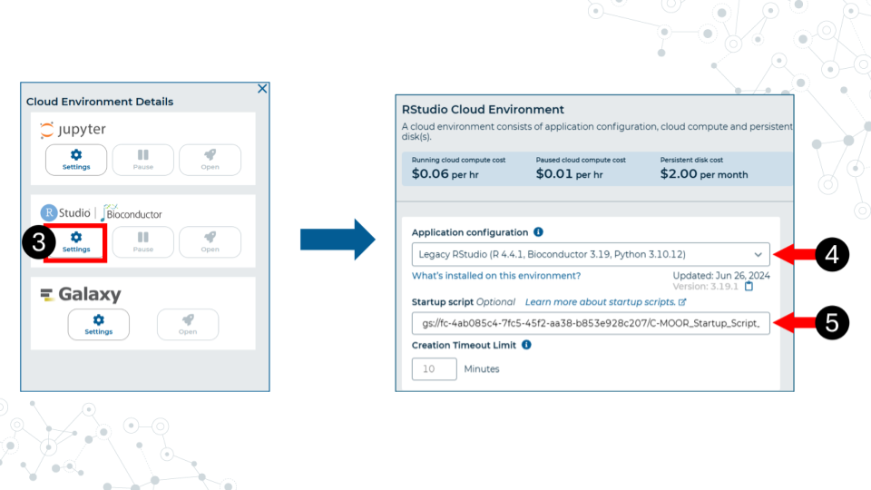
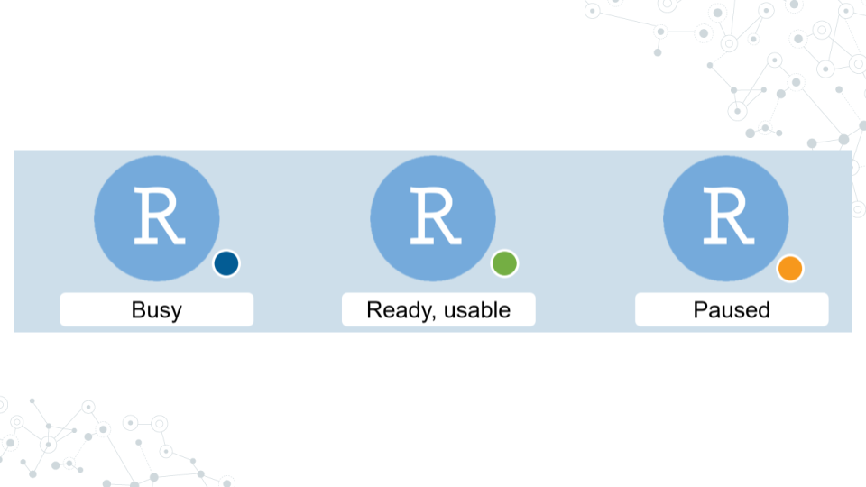
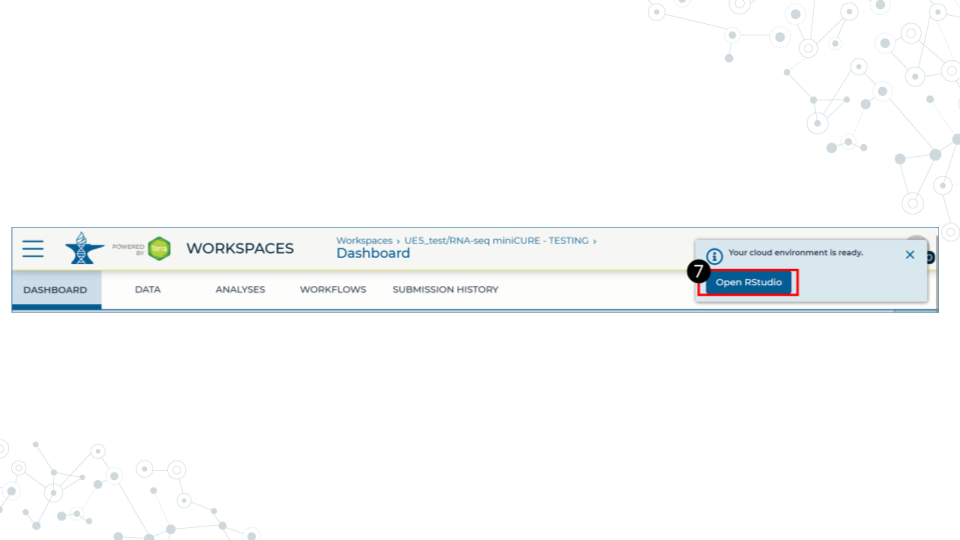
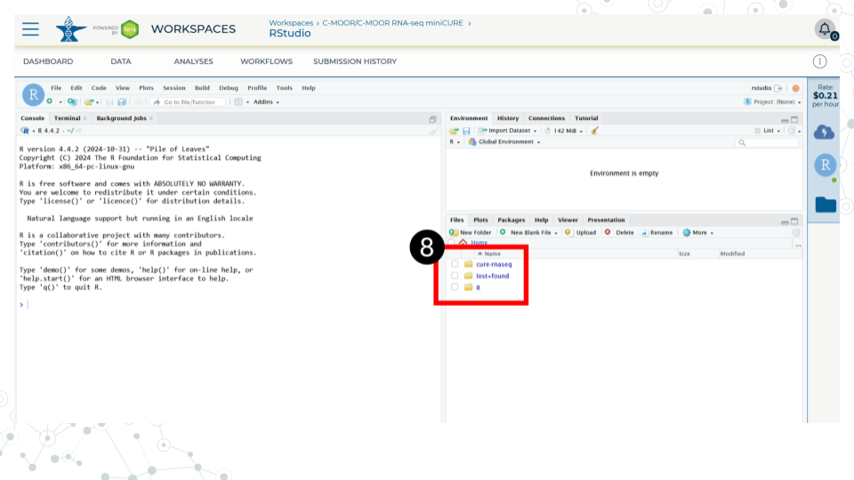
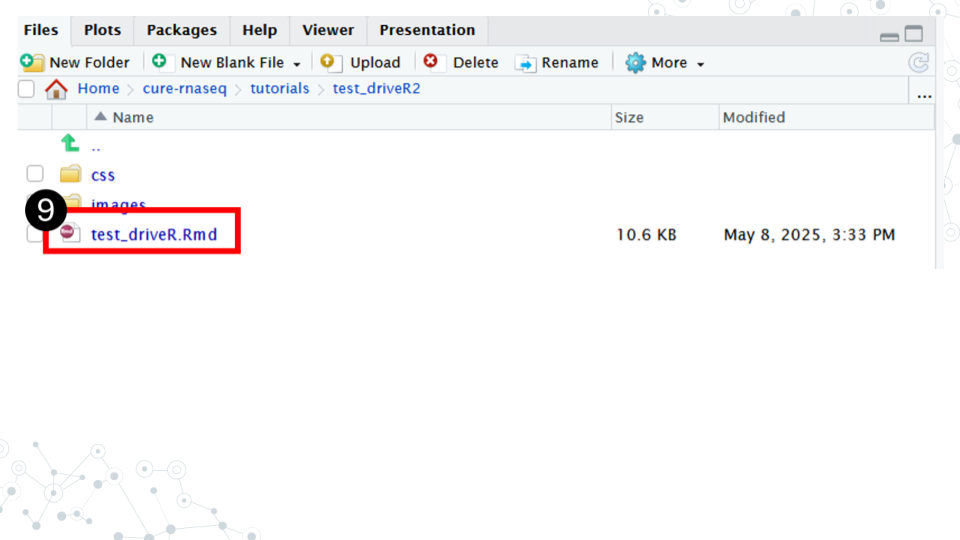
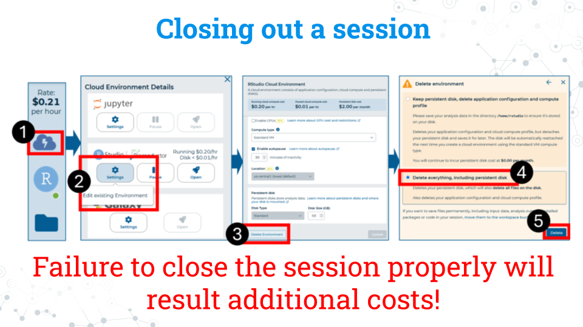

5.4 Running a module on AnVIL

5.4.0.1 Purpose
In this section we will go over how to run C-MOOR modules on AnVIL. First we will need to clone the workspace that correlates to the research project we want to do (RNA-seq or 16S). We will only need to do this step once. Then we will go over how to create an RStudio environment in that workspace to run the module and properly end a session on AnVIL to prevent runaway costs.
5.4.0.2 Learning Objectives
- Clone a public workspace for the research project you want to do (RNA-seq or 16S)
- Launch a module through the cloned workspace
- Close out a session on AnVIL properly to prevent runaway costs
5.4.1 What is a workspace?
The workspace is the heart of AnVIL. Here are some key points about workspaces:
- Every workspace comes with its own Google Bucket (our cloud storage). Your bucket will be empty.
- Every workspace has its own billing project. Students who are not yet associated with a billing project will not be able to compute on their workspace.
- We can control access levels of users and set them either as owners, writers, or readers. Students will be writers with compute access.
5.4.2 Clone a workspace on AnVIL
We only have to do this once.
Follow the written steps below or refer to the slides or video guide.
- While logged into AnVIL, using the hamburger icon in the top left corner of the screen, navigate to the workspaces page
- Select the public tab
- Search for the desired workspace. Your instructor will tell you which workspace to look for (miniCURE-RNA-seq or miniCURE-16S-Human_Gut).
- Click on the more options icon on the right side of the desired workspace and click clone
- Give the cloned workspace a unique name, such as by adding your initials or last name. All workspaces must have unique names; if someone has already taken the workspace name you initially wanted, please try a different name.
- Confirm the billing project is the one your instructor has chosen.
- The rest of the options should be left as is. Clone the workspace. It may take a few minutes to clone.
You only have to clone the workspace once. From now on, use your cloned workspace. After you clone the workspace you will automatically be directed to it. For all other times, your workspaces can be found using the hamburger icon in the top left.
5.4.3 Running modules on AnVIL
5.4.3.1 Starting a module on AnVIL
When you open the workspace, you will be on the dashboard tab by default. The dashboard contains the instructions on how to use the workspace, links to C-MOOR websites, and the startup script.
- Copy the startup script. Make sure there are no spaces before or after what you copy. This script is held in the original workspace everyone cloned. It does not have to be in your own workspace for it to work.
- Click on the Environment Configuration button (cloud with thunderbolt)

- In the RStudio section, click Settings
- In application configuration, select Legacy RStudio (R 4.4.1, Bioconductor 3.19, Python 3.10.12).
- In the startup script field, paste the startup script
- Scroll to the bottom of the window and click “Create”.

It will take some time for the RStudio Environment to be created. You can keep track of the status of the environment based on the colored dot next to the RStudio icon. The dot will turn green when the environment is ready. While it is loading (blue), you cannot interact with it.

- When the environment is ready, use the Open RStudio button that will pop up. You can also access RStudio through the Analyses tab. If you hold down Ctrl as you click, you can open RStudio in a new window.

- Use the file explorer in RStudio to navigate to your module of choice. From the folder called cure-rnaseq, go to tutorials, and then the folder of the module you want.

- In the module’s directory, open the .Rmd file by double clicking its name.

- Click Run Document in the open .Rmd file

When you are finished, make sure you close out your session properly to prevent runaway costs!.
5.4.4 Closing out a session on AnVIL
- On the right side of the screen, click the Cloud Environment button. This is the Cloud with the lighting symbol.
- Under the RStudio section, click settings.
- Scroll to the bottom of the new window and click delete environment.
- Check Delete everything, including the persistent disk or your instructor’s billing account will incur costs for storage.
